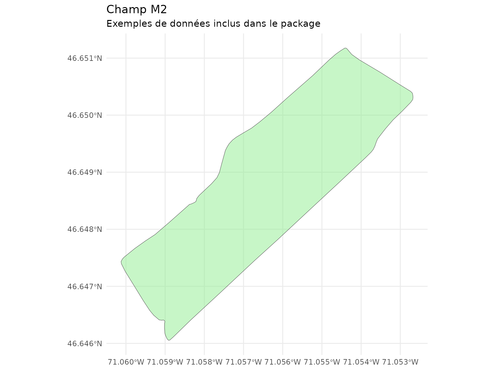

Detection et analyse des haies brise-vent
Source:vignettes/haies-brise-vent.Rmd
haies-brise-vent.RmdIntroduction
Les haies brise-vent jouent un rôle important dans la protection des
cultures contre le vent. Ce guide présente les fonctions du package
covariablechamps pour détecter, classifier et analyser les
haies à partir des données LiDAR.
Chargement du champ M2
Le package inclut un champ d’exemple (M2) situé au
Québec.
champ <- st_read(system.file("extdata", "M2.shp", package = "covariablechamps"))
#> Reading layer `M2' from data source
#> `/home/runner/work/_temp/Library/covariablechamps/extdata/M2.shp'
#> using driver `ESRI Shapefile'
#> Simple feature collection with 1 feature and 65 fields
#> Geometry type: POLYGON
#> Dimension: XY
#> Bounding box: xmin: -71.06012 ymin: 46.64605 xmax: -71.05268 ymax: 46.65118
#> Geodetic CRS: WGS 84
ggplot() +
geom_sf(data = champ, fill = "lightgreen", alpha = 0.5) +
theme_minimal() +
labs(title = "Champ M2",
subtitle = "Exemples de données inclus dans le package")
Détection des arbres et haies depuis LiDAR
La fonction extraire_classifier_haies_lidar() détecte et
classifie automatiquement les arbres et haies à partir d’un nuage de
points LiDAR.
Note: Cette fonction nécessite des données LiDAR réelles qui doivent être téléchargées. Elle n’est pas exécutée dans cet article.
# 1. Télécharger les données LiDAR ponctuelles
lidar <- telecharger_lidar_ponctuel(champ)
# 2. Détecter et classifier les haies
resultat <- extraire_classifier_haies_lidar(
nuage_points = lidar$nuage_points,
res_dtm = 1,
res_chm = 0.25,
hmin = 2,
eps_dbscan = 6,
minPts_dbscan = 3,
seuil_aspect = 6,
seuil_largeur_max = 12
)
# 3. Récupérer les arbres classifiés
arbres <- resultat$trees_sf
haies <- resultat$haies_rectangles
# 4. Visualiser les résultats
plot(st_geometry(champ), col = "lightgreen")
plot(st_geometry(arbres), add = TRUE, col = "darkgreen", pch = 19, cex = 0.5)Paramètres de détection
| Paramètre | Description | Valeur par défaut |
|---|---|---|
res_dtm |
Résolution du MNT (m) | 1 |
res_chm |
Résolution du MCH (m) | 0.25 |
hmin |
Hauteur minimale des arbres (m) | 2 |
eps_dbscan |
Distance pour clustering DBSCAN | 6 |
minPts_dbscan |
Points minimum pour cluster | 3 |
seuil_aspect |
Ratio L/W minimal pour haie | 6 |
seuil_largeur_max |
Largeur max d’une haie (m) | 12 |
Extraction des lignes centrales
Pour les analyses de distance au vent, vous pouvez extraire les lignes centrales des haies:
# Extraire les lignes centrales des haies
lignes_haies <- extraire_ligne_centrale_haies(resultat$haies_rectangles)
# Visualiser
plot(st_geometry(champ), col = "lightgreen")
plot(st_geometry(lignes_haies), add = TRUE, col = "darkgreen", lwd = 3)Calcul des zones de protection
Une fois les haies détectées, vous pouvez calculer les zones de protection:
# Définir la direction du vent (degrés, 0 = Nord, 90 = Est)
direction_vent <- 270 # Vent d'ouest
# Calculer les zones de vent avec spline
zones <- calculer_zones_vent_spline(
haies = lignes_haies,
direction_vent = direction_vent,
facteurs_h = c(1, 2, 3, 5, 10),
hauteur_haie = NULL
)
# Rasteriser les zones
template <- rast(champ, resolution = 2)
zones_raster <- rasteriser_zones_gradient_v2(zones, template)
# Visualiser
plot(zones_raster, main = "Zones de protection (multiples de H)")
plot(st_geometry(lignes_haies), add = TRUE, col = "black", lwd = 2)Distances aux arbres
Pour une analyse plus fine de l’effet du vent:
# Distance simple aux arbres
dist_arbres <- calculer_distance_arbres(
arbres_sf = arbres,
champ_bbox = champ,
resolution = 2,
buffer_arbre = 3,
max_distance = 100
)
visualiser_distance_arbres(dist_arbres, type = "buffer")Bonnes pratiques
- Validation terrain: Validez toujours les détections avec des observations terrain
- Résolution: Utilisez une résolution fine (0.25-1m) pour capturer les haies étroites
- Saison: Les données LiDAR de saison végétative (feuilles) donnent de meilleurs résultats
-
Paramètres: Ajustez
eps_dbscanetseuil_aspectselon la densité des arbres
Workflow complet
library(covariablechamps)
library(sf)
library(terra)
# 1. Charger le champ M2
champ <- st_read(system.file("extdata", "M2.shp", package = "covariablechamps"))
# 2. Télécharger les données LiDAR
lidar <- telecharger_lidar_ponctuel(champ)
# 3. Détecter et classifier les haies
resultat <- extraire_classifier_haies_lidar(
nuage_points = lidar$nuage_points,
hmin = 2
)
# 4. Extraire les lignes centrales
lignes_haies <- extraire_ligne_centrale_haies(resultat$haies_rectangles)
# 5. Calculer les zones de protection
direction_vent <- 270 # Vent d'ouest
zones <- calculer_zones_vent_spline(
haies = lignes_haies,
direction_vent = direction_vent,
facteurs_h = c(1, 2, 5, 10)
)
# 6. Rasteriser et visualiser
template <- rast(champ, resolution = 2)
zones_raster <- rasteriser_zones_gradient_v2(zones, template)
plot(zones_raster)
plot(st_geometry(lignes_haies), add = TRUE, col = "black", lwd = 2)